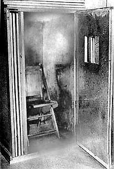

Tuesday, April the 9th, 2013
back to: title, date or indexes
Like so many of Isaac's attempts to apply his imaginative vision to life, this orgone box was compromised by his poverty and his many interests. It was too obviously a homemade, bargain-basement orgone box. It looked more like a cardboard closet or stage telephone booth than it did a scientific apparatus by which to recover the sexual energy one had lost to “culture”. Isaac's orgone box stood up in the midst of an enormous confusion of bed clothes, review copies, manuscripts, children, and the many people who went in and out of the room as if it were the bathroom. Belligerently sitting inside his orgone box, daring philistines to laugh, Isaac nevertheless looked lost, as if he were waiting in his telephone booth for a call that was not coming through.
Alfred Kazin on Isaac Rosenfeld, quoted in Adventures In The Orgasmatron : Wilhelm Reich And The Invention Of Sex by Christopher Turner (2011)

Hooting Yard on the Air, April the 11th, 2013 : “The Statement Of William Tell” (starts around 22:16)